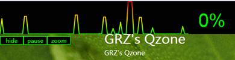
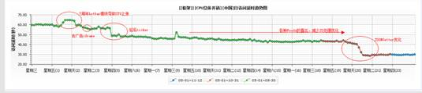
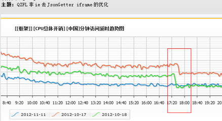
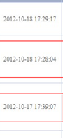
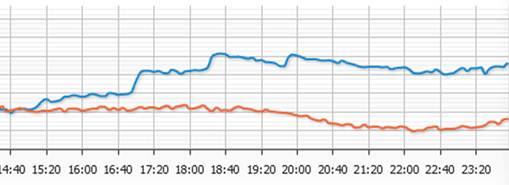
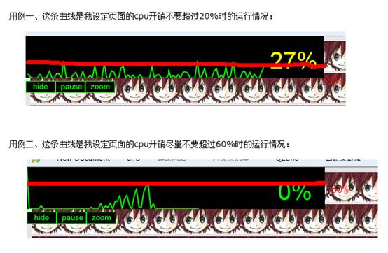

初见CPUJS
一、 为什么会有CPUJS
业界流传一句话：“You can't optimize what
you cannot measure”！没错，监控非常关键，而Web前端一直都缺乏一种可以用来监控页面的CPU开销的方法，由于没有数据的监控和支撑，我们无法衡量我们所做的优化能带来的效应，也无法从监控上去直观地发现产品的CPU开销变化趋势，于是我们急需一种监控手段，而CPUJS一开始就是为了监控Web的CPU开销而生。
而当一个Web页面的功能逻辑越来越复杂，首屏需要执行的任务数就越多。如果我们无法妥善地安排这些任务的调度，它们就会挤在一起执行，导致CPU飙升、页面无法快速响应用户的操作，用户的直接感受就是“卡”。所以CPUJS还有一个关键的功能就是它提供了一个任务调度器可以被用来优化Web页面“卡”的问题。
二、 CPUJS的功能
其实业界广泛讲到的Web性能优化实际上很多都指的是“展示速度”上的优化，就是如何让首屏内容可以被用户更快的看到；而其实Web性能优化应该还包括另一块，那就是“CPU性能”的优化，就是优化代码执行效率、页面卡的问题。
CPU性能优化这一分支其实大家一直都有在做，《高性能Javascript》等书也不少，但是这些很多都是从微观的角度，就是代码编写质量上去尝试优化性能的。但是仅仅只是微观层面的CPU性能优化是远远不够的，因为一个产品肯定会越做越大，维护的团队肯定会越来越多，模块数量、代码复杂度也是随着时间不断地膨胀。这就肯定会慢慢地导致一个页面打开一下子执行太多的任务，导致CPU飙升、用户感知到卡。
CPUJS最直接的好处就是可以用来捕捉页面CPU开销情况，发现卡的问题，促进CPU性能优化
，它主要包括几大功能：
1）
监控功能：监控页面“卡”的情况，实时绘制CPU曲线，方便大家在研发过程中发现卡的地方并优化之。

在日常开发的时候，可以打开CPUJS的Monitor曲线。这个曲线会实时监控当前页面的运行情况：0%表示任务运行0延时，非常顺畅；100%表示一个任务得延时100ms或以上的时间才会被执行，这就意味着当达到100%的时候，用户的交互会明显感知到卡。
2）
统计功能：统计一段时间内“卡”的情况，可以通过不同CPU比率的点来计算这段时间里面卡死的百分比，衡量卡的程度；也可以计算出一段时间内的曲线面积，衡量总运行开销。有了CPUJS的统计功能等于我们可以用CPU性能优化后的数据对比来衡量实际效果。
调用CPUJS.Stat.doCPUStat可以获取一段时间的性能开销统计数据，
将数据上报到统计平台上就可以看出产品日常运行的CPU开销情况了：

如果平时有做CPU性能优化，也可以从曲线上看出对比（衡量优化带来的成效）：
 
也可以通过监控发现一些平时日常版本是否对性能造成影响，及时fix：

（从监控显示该版本4次放量给CPU性能带来的消耗助剂增加）
3）
任务调度功能：将需要执行的任务都扔给CPUJS的任务调度器，它会根据当前的CPU情况来做智能调度，在尽量不让页面出现“卡”的前提下尽可能快地把任务执行完。
任务调度器可以设置一个阀值，让任务调度执行的过程页面CPU尽量不要超过某个数值，例如下面的例子是我在页面上动态创建10000个图片节点的一个demo：

机器越好，任务执行的速度越快，但无论什么样的机器，任务调度器就是要尽量保证任务的调度执行不要导致页面卡死，细水长流式的执行。这种情况非常时候用在一些非首屏展现相关的逻辑处理上。